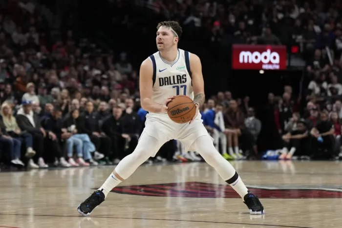
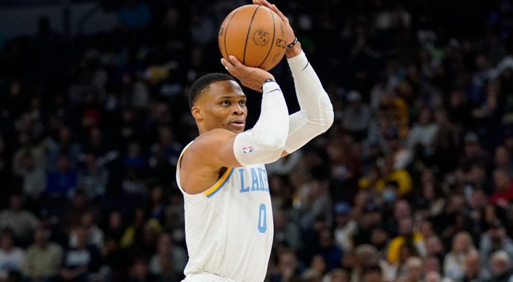

Former Wolverines in NBA playoffs, including a rookie called up for elimination game
LeBron James gestures after hitting a deep three-pointer during the first half of the Lakers’ 133-89 win over the New Orleans Pelicans in the semifinals of the NBA in-season tournament Thursday. (Ian Maule / Associated Press)
The league's Board of Governors approved a Player Participation Policy, which sets rules for player rest and bans teams from shutting down star players in order to improve draft position unless they have a legitimate injury.
Eyeing an NBA comeback, veteran point guard John Wall held a private workout on Sunday in front of multiple teams, including the Portland Trail Blazers. The Athletic’s Kelly Iko reported the news on Twitter.